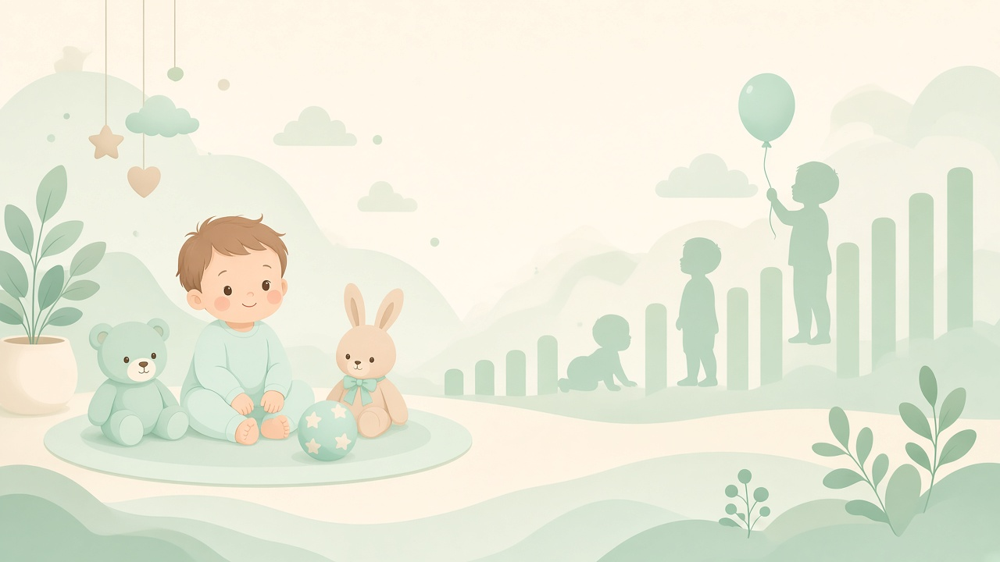
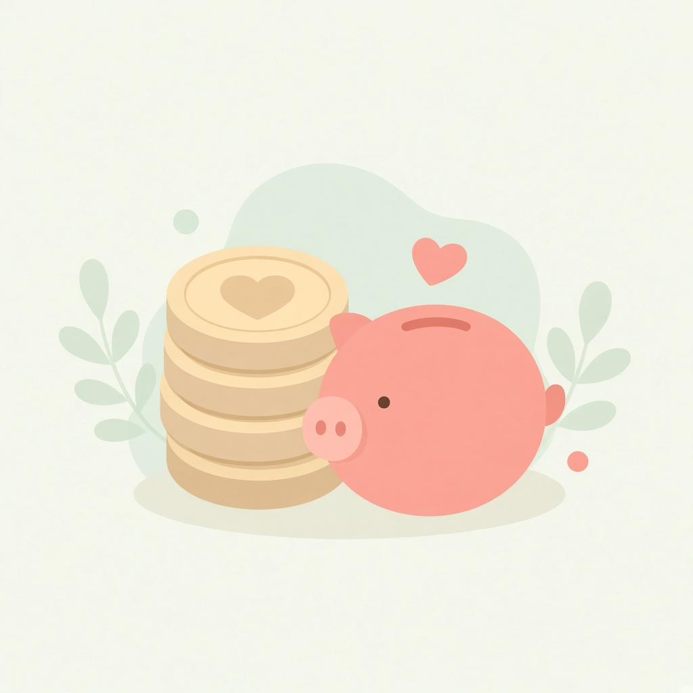
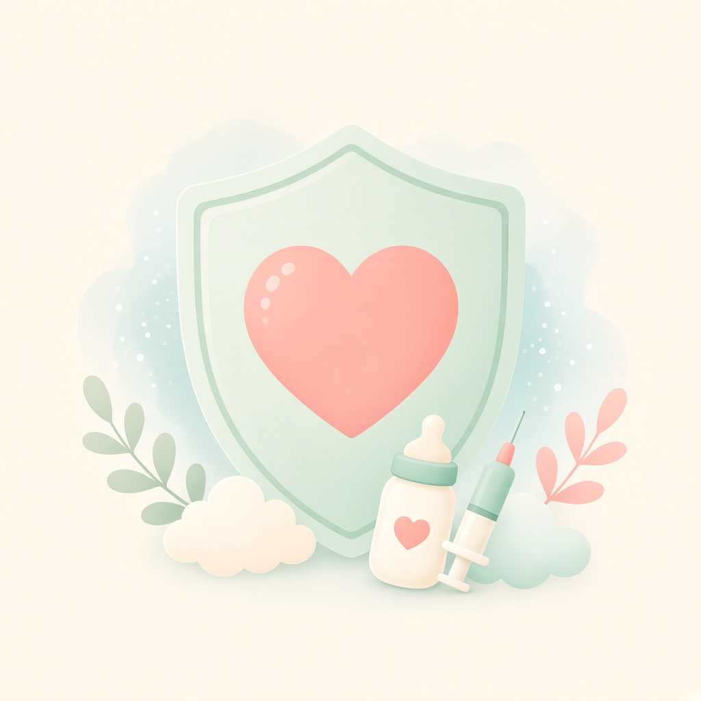
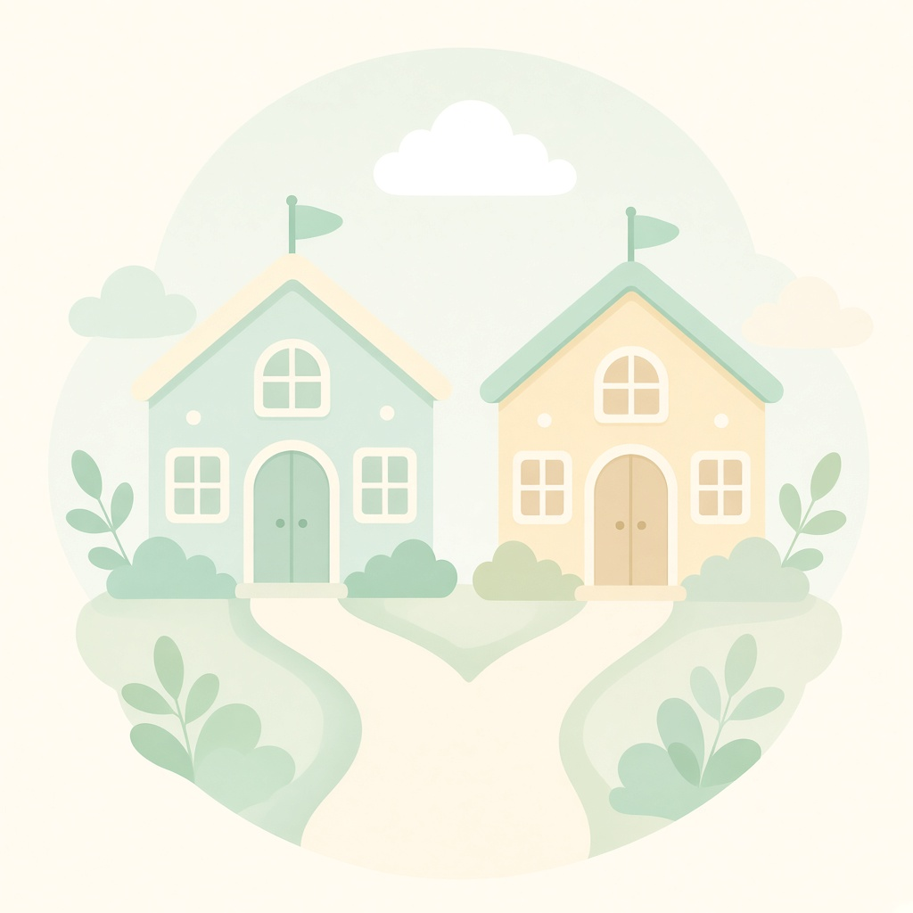
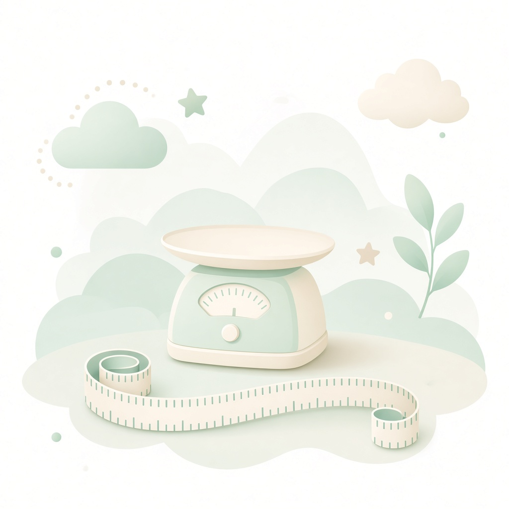

入學／學費預算／成長日記摘要

本地 :8891 同 GitHub Pages 同一份靜態頁；詳細以 Cursor Page 為準，呢度分頁睇摘要。主題可揀 Mist Soft 或 Baby 卡風。

幼稚園並列 St Cat（主線考慮） 同 學之園（並列；昇御海逸／紅磡）；之後 DBSPD → DBS（高中可揀 DSE 或 IBDP）。對照：ESF 標準校全程國際 IB。
兩邊幼稚園之後都可申 DBSPD。本地直資線可喺 DBS 高中轉 IBDP；國際線多數由中學／全程跟 IB。
| 代號 | 意思 |
|---|---|
| A1 | 幼稚園（St Cat 或學之園）→ DBSPD → DBS 本地 NSS／DSE → 本地資助大學 |
| A2 | 同上，但高中轉 DBS IBDP（G10 Bridging + G11–G12） |
| B | ESF 標準校（KG→小學→中學 IB）→ 本地資助大學（對照） |
| 路徑 | 至中六／Y13 | 加本地資助大學4年 | 相對 A1 |
|---|---|---|---|
| A1 直資＋DSE | 1,078,704 | 1,276,704 | — |
| A2 直資＋IBDP | 1,249,104 | 1,447,104 | +170,400 |
| B ESF 標準＋IB（含 NCL） | 2,415,900 | 2,613,900 | +1,337,196 |
約數：A1 ~108萬／128萬；A2 ~125萬／145萬；B ~242萬／261萬。凍價 2026/27。
| 階段 | A1／A2 | B |
|---|---|---|
| 幼稚園 | 319,044（St Cat 4年；學之園見下表對照） | 218,000（ESF KG×2） |
| 小學 | 363,780（DBSPD×6） | 908,000（145k×6 + NCL 38k） |
| 中學 | A1 395,880／A2 566,280 | 1,289,900（Y7–13） |
| 大學（參考） | 198,000（UGC 49,500×4） | |
St Cat 同學之園並列；學之園數字來自校網／EDB（昇御海逸），雜費／教材費未計入。
| 項目 | 年費 |
|---|---|
| St Cat Harbour Place（半天） | 64,328 |
| St Cat 九龍塘 Nursery／LKG·UKG | 80,234／87,241 |
| 學之園・昇御海逸 PN（校網月費） | 93,600（7,800×12） |
| 學之園・昇御海逸 N／LKG／UKG 粵英 | 90,000（7,500×12） |
| 學之園・昇御海逸 N／LKG／UKG 普英 | 93,600（7,800×12） |
| DBSPD P1–P6 | 60,630 |
| DBS NSS／IB Bridging／IB G11–12 | 65,980／65,980／151,180 |
| ESF KG Abacus EN／小學／Y7–11／Y12–13 | 109k／145k／188.3k／174.2k |
| ESF NCL（入 Y1，一次） | 38,000 |
| UGC 資助學士（2027/28 水平） | 49,500 |
來源：EDB 收費證明書、DBSPD／DBS 學費頁、ESF school-fees、政府 UGC 學費公布。私人詳細時間線／住址／逐年表見上方 Page。
出世 2026-06-09 → 而家約 5 個月。2027/28 PN／K1 窗多數唔夾年齡；而家當 recon。真正有用約 2028 PN／2029 K1。
| 提醒 | 時間（HKT） | 性質 |
|---|---|---|
| 每月入學・健康待辦 | 每月 1 號約 09:00（可前後 30 分） | 常設 |
| 約 6 個月母嬰針（四合一第 3、乙肝第 3） | 2026-12-01 09:00 | 一次過 |
| 約 12 個月針前提醒 | 2027-05-26 09:00 | 一次過 |
| St Cat Harbour Place PN 報名窗 | 2027-08-01 09:00 | 一次過 |
| 約 18 個月針 | 約 2027-11-25 09:00（到正確年份先出聲） | 一次過 |
| St Cat K1 報名窗 | 2028-08-01 09:00 | 一次過 |
提醒只喺 Baby Stuff chat 出；針程以母嬰健康院為準（熱線 2112 9900）。
之後已公佈公開日期：暫無（St Cat KT／HP、Victoria prospect open day、Pebbles、學之園下一場）。
| 剛過 | 日期 | 狀態 |
|---|---|---|
| 學之園 Open House（含紅磡昇御海逸） | 2026-10-31 | 已完；未公佈下一場 |
| Victoria 入學資訊日（金鐘） | 2026-10-22 | 已完；暫無下一場 |
| 何文田浸信會幼稚園親子遊戲日 | 2026-10-17 | 已完 |
仍開但唔啱歲：Victoria PN 2027/28 申請至 2026-12-14；學之園 PN 申請約 2026-12 公佈。
無公開 open day：St Cat／Pebbles — 可電問參觀。Pebbles 2769-1308；Victoria 何文田 2130 3630／2762 9130；St Cat KT 2337 7344；HP PN 2670 6600。

以下按香港家庭健康服務時間表作參考；實際日期以你嘅針卡／母嬰健康院紀錄為準，唔代表每針已打。
| 約歲 | 大約時間 | 生長／檢查 | 計劃內疫苗（參考） | 健康院 | 私家 |
|---|---|---|---|---|---|
| 初生／出院前後 | 2026-06（第1日起） | 初生體檢；聽力普查（如適用） | 卡介苗；乙肝第1 | ||
| 約1個月 | 約 2026-07 | 生長／飲食評估 | 乙肝第2 | ||
| 約2個月 | 約 2026-08 | 生長／飲食；發展監察如適用 | 四合一第1；肺炎球菌第1 | ||
| 約4個月 | 約 2026-10 | 生長／飲食；有需要可安排發展監察 | 四合一第2；肺炎球菌第2 | 見前瞻表 | 見前瞻表 |
| 而家約5個月 | 2026-11（截至 11-05） | 確認4個月針及生長評估已約／已打 | 若未打：補四合一第2、肺炎球菌第2；下一站約6個月 | — | — |
來源：衞生署家庭健康服務「幼兒健康及發展綜合計劃」同「香港兒童免疫接種計劃」（2026 年查閱）。實際以你登記母嬰健康院為準。
公開頁只睇唔改；本機 http://127.0.0.1:8891/「健康檢查／針程」先可勾選健康院／私家針程。
右邊「健康院／私家」可逐針勾選（同一針可分開記錄）；保存在本機（localStorage）。過往表初生～2個月針亦可勾。以針卡／母嬰健康院為準。
| 年齡 | 生長／飲食 | 發展監察 | 計劃內疫苗 | 健康院 | 私家 |
|---|---|---|---|---|---|
| 約 4 個月 | 有 | 有需要可安排 | 四合一第 2；肺炎球菌第 2 | ||
| 約 6 個月（約 2026-12） | 有 | 常規 | 四合一第 3；乙肝第 3 | ||
| 約 12 個月（約 2027-06） | 有 | 常規 | MMR 第 1；肺炎球菌加強；水痘第 1 | ||
| 約 18 個月（約 2027-12） | 有 | 常規 | 四合一加強；MMRV 第 2 | ||
| 約 4 歲 | 有 | 有需要 | —（學前視力普查） | — | |
| 小一 | 學校／家庭醫生 | — | 到校：四合一加強；MMRV 補種如適用 |

幼稚園目標：St Cat（主線考慮）＋學之園（並列；昇御海逸／紅磡）→ DBSPD → DBS；高中可揀 DSE 或 IBDP。
| 階段 | 大約時間 | 做咩 |
|---|---|---|
| Playgroup（如 Pebbles） | 而家～2027 | 早啲查輪候；建立社交同語言（費用彈性大，未計入路徑總額） |
| 幼稚園並列：St Cat PN（Harbour Place） | 約 2028 年 9 月入；報名約 2027 年 9 月 | 紅磡，較近；主線考慮之一 |
| 幼稚園並列：學之園（昇御海逸等） | 約 2028–2031（以校方當年為準） | 紅磡較近；學費見「主要年費」；同 St Cat 一齊跟 |
| St Cat K1–K3 九龍塘（若走 St Cat） | 約 2029–2031 | 面試約取錄年前 11 月；之後升小準備 |
| DBSPD 小一→小六 | 約 2032–2038 | 申請窗極短；一條龍目標上 DBS；幼稚園無論 St Cat／學之園都可申 |
| DBS 中學 | 約 2038–2044 | 本地 DSE，或 G10 Bridging → IBDP（G11–G12） |
| 大學 | 約 2044–2047 | 本地 UGC 資助；或海外（另計） |
| （對照）ESF 線 | KG→Y13→大學 | 全日國際；學費見預算 B |
St Cat 同 DBSPD 都唔係政府統一派位；每一步獨立申請。St Cat 畢業生升 DBSPD 有口碑但無保證。幼稚園走學之園之後仍可申 DBSPD。DBSPD 全英語，日常英語自然表達比操練習卷重要。
一句：繼續直資線，就算高中讀 IB，今日價累計學費都遠低於全日 ESF。

出世 2026-06-09（男）。而家約 5 個月（截至 2026-11-05）。參考重點，唔係考試清單。
體重／身長／頭圍詳細說明同曲線參考亦見上方 詳細 Page；呢度用成長日記即時輸入。
公開頁只睇唔改；本機 http://127.0.0.1:8891/「成長發展」先可輸入成長日記。
保存在本機瀏覽器（localStorage），唔會上傳。以母嬰／針卡為準；跟百分位趨勢，唔使同人仔比。
未有紀錄。
| 日期 | 約月齡 | 體重(kg) | 身長(cm) | 頭圍(cm) | 來源 | 備註 |
|---|
未有成長紀錄 — 加一筆體重／身長／頭圍先。
公開頁只睇唔改；本機 http://127.0.0.1:8891/「成長發展」先可勾選發展成就。
勾選保存在本機（localStorage）；以母嬰為準。
按月齡前瞻至約12個月／1歲：括號／旁註＝多數寶寶做到都正常嘅大約月齡（參考），唔係考試線。BB 而家約5個月；6–12個月係前瞻計劃，做到先勾。
發展重點：反射、餵食同睡眠、結絆；頭部控制弱。此階段無可勾選細項，見下方過往參考表。
發展重點：短暫追視面孔；趴地可微微抬頭。相關進度可喺約2–3個月項勾選。
發展重點：社交笑、發聲（cooing）、追視物件；頭部控制進步
發展重點：伸手抓玩具、趴地時間變長、笑聲出現；可能開始側身
發展重點：大笑、主動伸手抓物、語聲增多；可能開始翻身
發展重點：追視、對人笑、開始發聲；頭部控制進步；可能開始認生。以下係而家仍常見／4–6個月窗。
發展重點：坐得較穩、雙手傳物、對固體食物有興趣；語聲／babble 增多。配合約6個月針。
發展重點：坐穩、開始打轉／爬、對自己名字有反應；抓握更準。
發展重點：爬行／扶物跪站、怕生更明顯、物件恆存（搵藏起嘅玩具）。
發展重點：扶走（cruising）、拇指食指拈物、明白簡單「唔好」、模仿動作。
發展重點：扶站更穩、用手指指物、手指食物／自己拿杯；幾個有意義音節。
發展重點：可能獨步幾步、有意叫爸／媽、簡單手勢（再見）；跟一句簡單指示。
發展重點：扶走／獨立坐穩或開始獨步；叫爸媽；用手勢溝通；主動探索。配合約12個月針。
| 約歲 | 大約時間 | 發展重點（參考） | 家長小提示 |
|---|---|---|---|
| 初生／出院前後 | 2026-06（第1日起） | 反射、餵食同睡眠建立、與照顧者結絆；頭部控制弱 | 跟針卡確認 卡介苗、乙肝第1；聽力普查如適用 |
| 約1個月 | 約 2026-07 | 短暫追視面孔；趴地可微微抬頭；驚跳反射減少 | 短時間趴地玩；確認乙肝第2 |
| 約2個月 | 約 2026-08 | 社交笑、發聲（cooing）、追視物件；頭部控制進步 | 對眼傾偈、多對話；確認四合一第1、肺炎球菌第1 |
| 約3個月 | 約 2026-09 | 伸手抓玩具、趴地時間變長、笑聲出現；可能開始側身 | 提供安全抓握玩具；繼續趴地 |
| 約4個月 | 約 2026-10 | 大笑、主動伸手抓物、語聲增多；可能開始翻身 | 確認四合一第2、肺炎球菌第2及生長評估 |
| 而家約5個月 | 2026-11（截至 11-05） | 追視、對人笑、開始發聲；頭部控制進步；可能開始認生 | 繼續趴地；準備約6個月針（約 2026-12） |
| 約6個月 | 約 2026-12 | 坐得較穩、雙手傳物、babble 增多；對固體食物有興趣 | 約6個月針（四合一第3、乙肝第3）；安全進食環境 |
| 約7個月 | 約 2027-01 | 坐穩、打轉／開始爬、對名字有反應 | 地板安全區；多叫名字玩捉迷藏 |
| 約8個月 | 約 2027-02 | 爬行／扶企、怕生、搵藏起玩具 | 傢俬防撞；持續共讀同對話 |
| 約9個月 | 約 2027-03 | 扶走、拇指食指拈物、明白「唔好」、模仿 | 細物防噎；清楚簡單指示 |
| 約10個月 | 約 2027-04 | 扶站穩、手指指物、手指食物；有意義音節 | 鼓勵手指食物；回應指物溝通 |
| 約11個月 | 約 2027-05 | 可能獨步幾步、有意叫爸媽、揮手再見 | 安全步行空間；約12個月針前提醒 |
| 約12個月／約1歲 | 約 2027-06 | 扶走／獨步起步；叫爸媽；手勢溝通；主動探索 | 約12個月針（MMR、肺炎球菌加強、水痘）；多共讀 |
| 約歲 | 時間 | 發展重點 | 家長小提示 |
|---|---|---|---|
| 而家 ~5 個月 | 約 2026-11 | 追視、對人笑、開始發聲；頭部控制進步；可能開始認生 | 對眼傾偈、趴地玩（tummy time）；跟母嬰約針 |
| ~6 個月 | 約 2026-12 | 坐得較穩、雙手傳物、babble；對固體食物有興趣 | 約6個月針；安全進食 |
| ~7 個月 | 約 2027-01 | 坐穩、打轉／爬、對名字有反應 | 地板安全區；多叫名字 |
| ~8 個月 | 約 2027-02 | 爬行／扶企、怕生、物件恆存 | 防撞；共讀對話 |
| ~9 個月 | 約 2027-03 | 扶走、拈細物、明白「唔好」、模仿 | 防噎；簡單指示 |
| ~10 個月 | 約 2027-04 | 扶站、指物、手指食物；有意義音節 | 鼓勵手指食物 |
| ~11 個月 | 約 2027-05 | 可能獨步、有意叫爸媽、揮手再見 | 安全步行空間 |
| ~1 歲（12 個月） | 約 2027-06 | 扶走／獨步起步；叫爸媽；手勢溝通；主動探索 | 約12個月針；多共讀繪本（中英）；練習短暫分開 |
| ~2 歲 | 約 2028-06 | 跑跳、短句、模仿、自我意識強；情緒起伏正常 | 自理：洗手、執玩具；社交遊戲多過操練 |
| ~3 歲 | 約 2029-06 | 短句對話、跟指示、同齡玩耍、自理進步 | 面試：小組遊戲 + 老師短談，唔使狂做練習紙 |
| ~4 歲（K2） | 約 2030-06 | 故事理解、問點解、小肌肉（畫／剪）、群體規則 | 英語以日常對話同共讀為主；建立簡單興趣 |
| ~5 歲（K3） | 約 2031-06 | 專注稍長、合作遊戲、表達感受、自理穩陣 | 模擬陌生環境用英語溝通；保持睡眠同戶外 |
| ~6 歲／小一 | 約 2032-06–09 | 適應全日制、群體規矩、獨立完成小任務 | 提前 bookmark DBSPD；備 1–2 間後備 |
| ~7 歲／小二 | 約 2033 | 讀寫基礎、朋友關係、課外興趣深化 | 平衡學業同休息；持續英語閱讀 |
| 小學 P3–P6 | 約 2034–2038 | 抽象思維起步、同儕認同、興趣專長更清晰 | 興趣班揀精唔揀多；輕量談升中／IB vs DSE |
| 中學 | 約 2038–2044 | 身份探索、自主、壓力管理同長遠目標 | 中三／G10 前決定 DSE vs IB |
| 大學 | 約 2044–2047 | 獨立生活、專業探索、財務同時間管理 | 本地資助 vs 海外費用差好遠 |
更細嘅分段同學費現金流見上方詳細 Page。